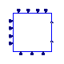

Renewable Plant Controllers
This package contains components that model the plant controller of the WECC-based renewable energy sources.
| Name | Description |
|---|---|
| REPCA1 | Renewable energy plant controller model A |
| Base classes for renewable energy plant control models from PSSE |

OpenIPSL.Electrical.Renewables.PSSE.PlantController.REPCA1Renewable energy plant controller model A
The REPCA1 module is used to represent the renewable energy plant controller. It takes as input voltage and reactive power to then generate volt/var control at the plant level. It also generates frequency and active power output to emulate active power control. TThe REPCA1 module provides active reactive power command references to the electrical controller components (REECA1, REECB1, and REECCU1).
The modelling of such devices is based, mainly, on the following reference:
Extends from BaseClasses.BaseREPC (Base class for the plant controller of the WECC generic renewable models).
| Name | Description |
|---|---|
| Tfltr | Voltage or reactive power measurement filter time constant [s] |
| Kp | Reactive power PI control proportional gain |
| Ki | Reactive power PI control integral gain |
| Tft | Lead time constant [s] |
| Tfv | Lag time constant [s] |
| Vfrz | Voltage below which State s2 is frozen [1] |
| Rc | Line drop compensation resistance [1] |
| Xc | Line drop compensation reactance [1] |
| Kc | Reactive current compensation gain |
| emax | Upper limit on deadband output [1] |
| emin | Lower limit on deadband output [1] |
| dbd1 | Lower threshold for reactive power control deadband (<=0) [1] |
| dbd2 | Upper threshold for reactive power control deadband (>=0) [1] |
| Qmax | Upper limit on output of V/Q control [1] |
| Qmin | Lower limit on output of V/Q control [1] |
| Kpg | Proportional gain for power control |
| Kig | Proportional gain for power control |
| Tp | Real power measurement filter time constant [s] |
| fdbd1 | Deadband for frequency control, lower threshold (<=0) [1] |
| fdbd2 | Deadband for frequency control, upper threshold (>=0) [1] |
| femax | Frequency error upper limit [1] |
| femin | Frequency error lower limit [1] |
| Pmax | Upper limit on power reference [1] |
| Pmin | Lower limit on power reference [1] |
| Tg | Power Controller lag time constant [s] |
| Ddn | Reciprocal of droop for over-frequency conditions [1] |
| Dup | Reciprocal of droop for under-frequency conditions [1] |
| Vref | Regulated bus initial voltage |
| Qext | Reactive Power output signal |
| Pref | Real Power output signal |
| Power flow data | |
| M_b | Machine base power [V.A] |
| S_b | System base power [V.A] |
| V_b | Base voltage of the bus [V] |
| fn | System frequency [Hz] |
| P_0 | Initial active power [W] |
| Q_0 | Initial reactive power [var] |
| v_0 | Initial voltage magnitude [1] |
| angle_0 | Initial voltage angle [rad] |
| displayPF | Display power flow: |
| Control | |
| vcflag | Reactive droop (false) or line drop compensation (true) |
| refflag | Plant-level reactive power (false) or voltage control (true) |
| fflag | Governor response disable (false) or enable (true) |
| Name | Description |
|---|---|
| Qref | Reactive Power Reference |
| Plant_pref | Active Power Reference |
| Freq | Connection Point Frequency |
| Freq_ref | Plant Controller Frequency Reference |
| Qext | Reactive Power output signal |
| Pref | Real Power output signal |
| p0 | Initial Active Power |
| q0 | Initial Reactive Power |
| v0 | Initial Terminal Voltage Magnitude |
| branch_ir | Measured Branch Real Current |
| branch_ii | Measured Branch Imaginary Current |
| regulate_vr | Regulated Branch Real Voltage |
| regulate_vi | Regulated Branch Imaginary Voltage |